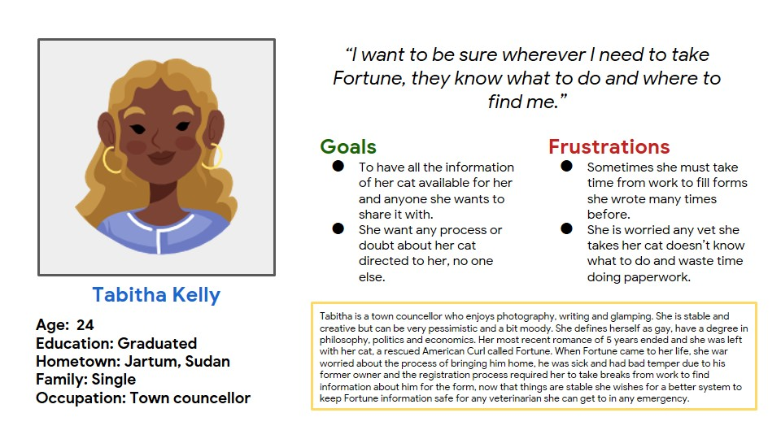
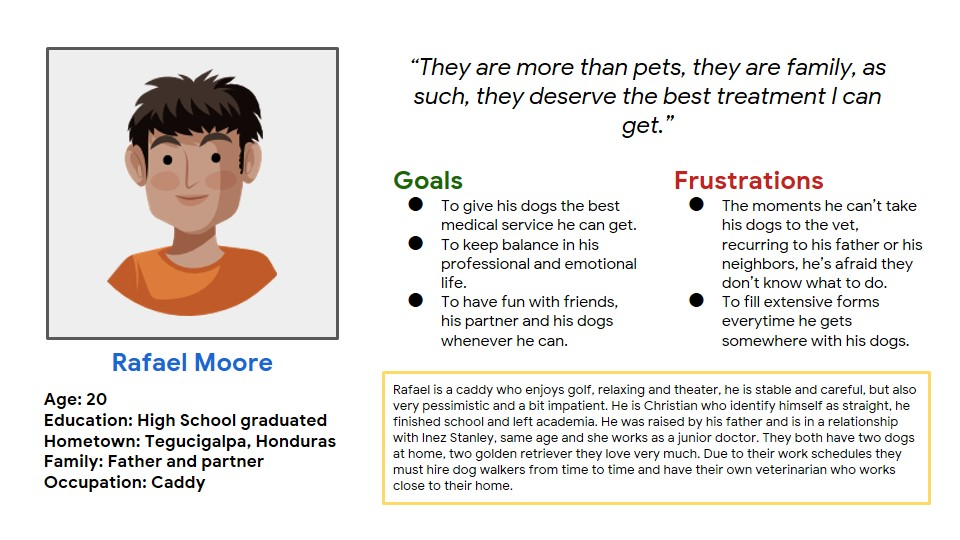
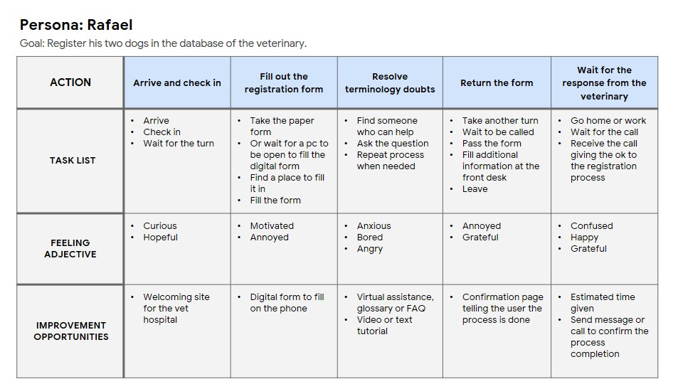
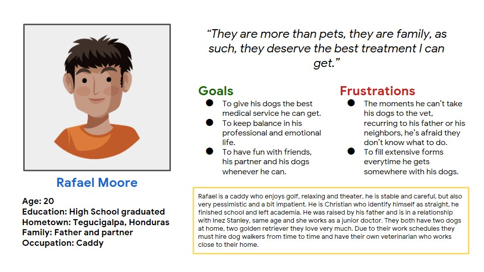
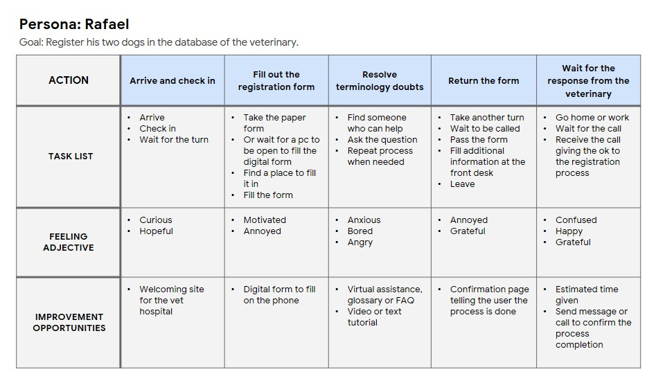
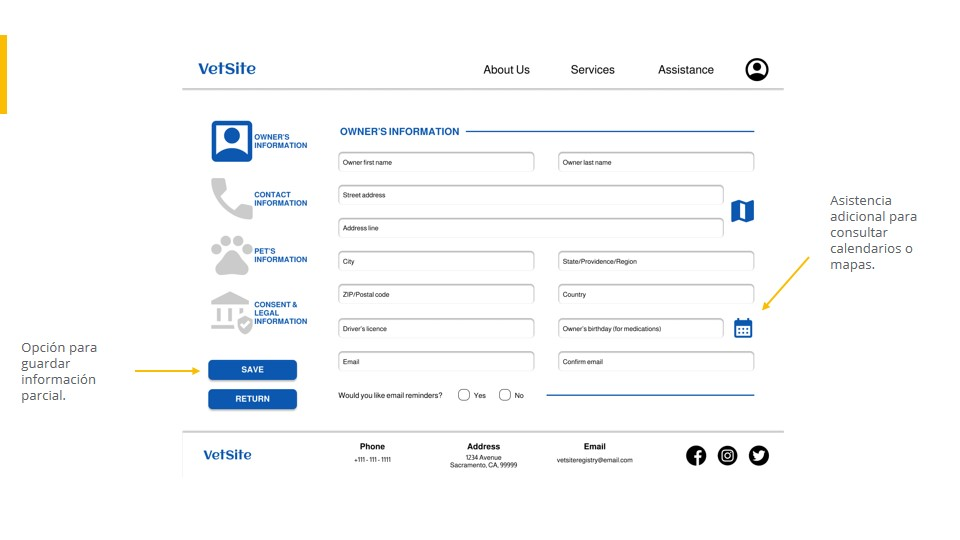
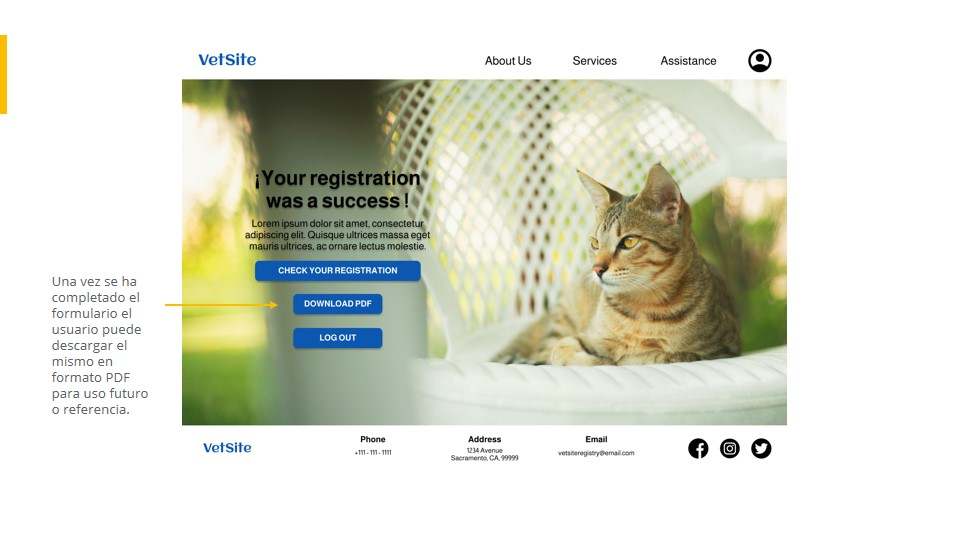
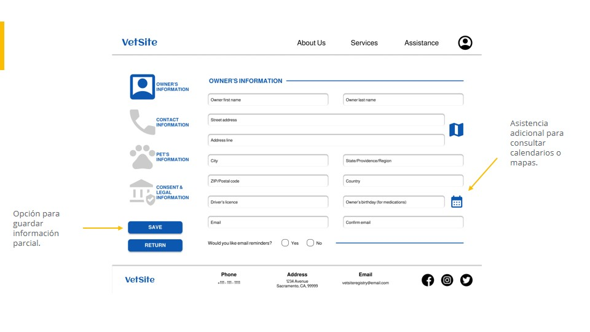
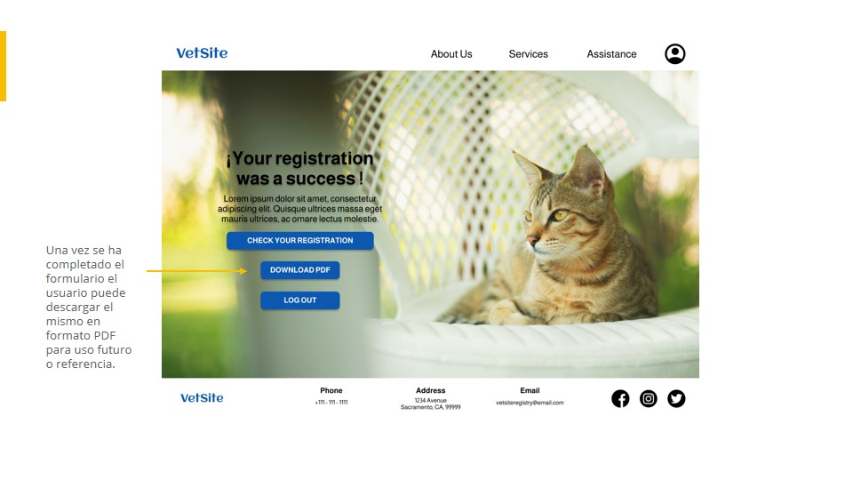

PROJECT DETAILS
Project type: Personal project.
My roles: Researcher - Interviewer - UX design - Visual design - Prototype.
Duration: August to September 2022.
Tools: Figma.

The website was developed for the client VetSite, a veterinary hospital looking for a platform to register pets for the users, which can store information and provide the same to other veterinary hospitals o registry services.
THE PROBLEM
The clients with pets find the registry process flow extremely neccessary but tedious, due to the handle in the platforms that use a long template, which is complete but doesn't a visual appeal or motivation for the client to fill it in, in particular when they must do it, it is required for them to be at the veterinary hospital.
THE OBJECTIVE
Provide to the VetSite veterinary hospital a customized website so the users can make the registry of their pets with all the possible assistance and it doesn't cause boredom or stress in case it is requried to be filled in the hospital.
RESEARCH
The research objective is to find the needs and experiences of users with previous solutions foreign to the proyect, this process was done twice on the initial proposal of the app, through unmoderated interviews, this were the findings:
- Preference of the digital form: Most users prefer to fill the digital form in front of a screen than the traditional paper forms.
- Long registry processes: All the users bothers them the time it takes the registry of their pets or similar documents, including the waiting time for the document to be saved in their platform.
- Medical knowledge: All the users have doubts about medical terminology they must fill in the forms, sometimes they don't know what to put or what do they mean.
Personas + Process map
The results of the interviews helped in the development of two Personas. With them, for a better understanding of the situation, a process map following the steps taken by the users in a similar website was created.
 




Definition and ideation
After doing the research and interviews, the results showed the need to make the registry process easier and provide clients a nicer format for their point of view:
- For most users the format of the registration form is generic, for that reason give them brand identity and interactive elements they may like is a must.
- Most users asks if the information provided is useful for other veterinary hospitals, for that, the questions asked are present in all forms available and ways to share that information online or by a documento to print.
- Half the users have doubts about medical terms for pets so the access to medical information and assistance by proffessionals is a requirement.
How the website can improve the situation of:
TABITHA
- The option to fill the form in their own time, saving the information piece by piece until completion another day.
- The registry form covers most of the doubts any veterinarian may have.
RAFAEL
- The format provides important information on an easy to read way for whoever needs it and can be shared with others online.
- The form will be stored in the VetSite database and the user can download a copy to take it with him.
DEVELOPMENT: WIREFRAMES
DEVELOPMENT: SITE MAP
Two usability tests were done with 4 participants each session, the results founded the cdefinitive changes in the development of the website.
DEVELOPMENT: FINAL

 



DEVELOPMENT: NAVIGATION

Reflections
The process was considerably varied in the creation of the website, due to the consideration of other format sizes and more customization options. The information analysis with people sharing similar interests and knowledge is the best experience and increase my knowledge for future projects, in this proffession each client brings a new and exciting challenge.